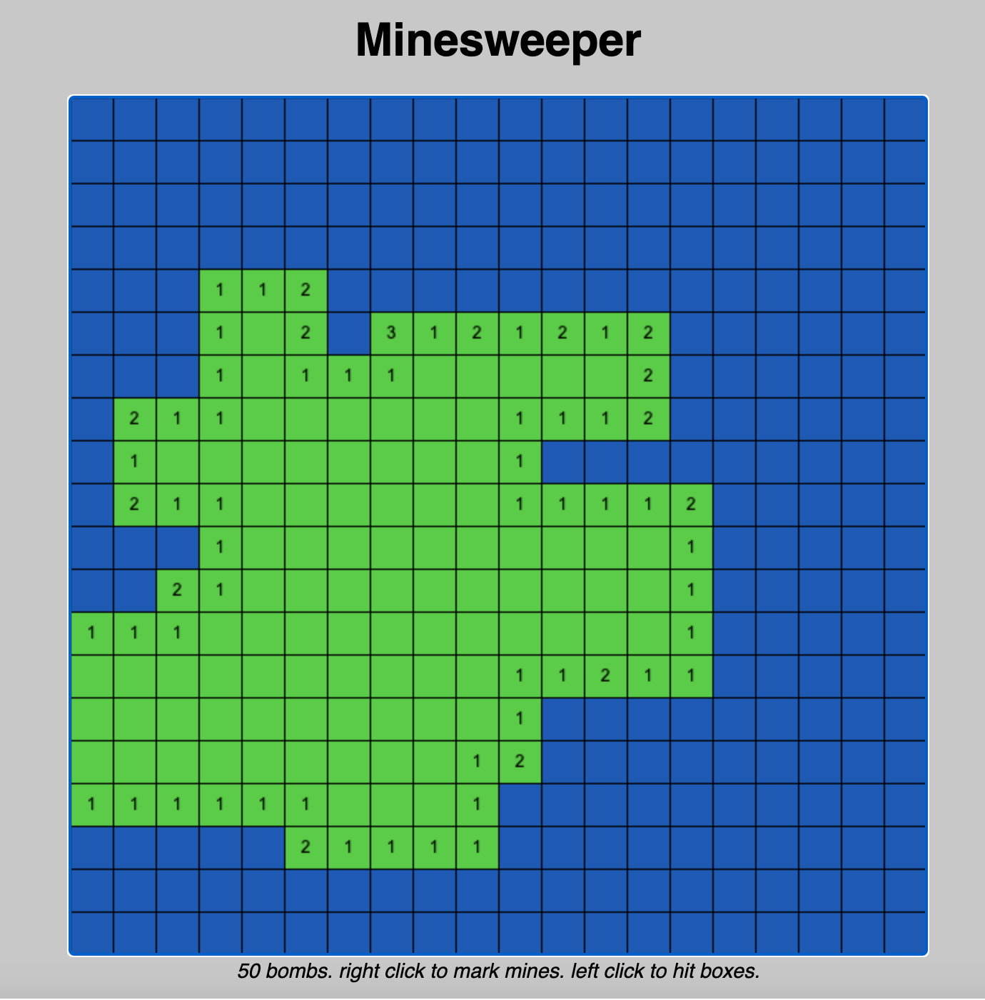

projects.
Click on any of the dropdowns to learn more about each project!
MINESWEEPER (2019)

I created a replica Minesweeper game for my AP Computer Science A class.
This taught me about game design, functions, for loops, and while loops.
The code can be viewed here and the game can be played here.
ASTEROIDS GAME (2019)
This project involves very basic game design, as you play as a spaceship and
your goal is to destroy the asteroids around you. This taught me to implement
different game mechanics, including phsyics, projectiles, health, and more.
These were accomplished using classes, abstract methods, and functions.
The code can be viewed here
and the game can be played here.
CONNECT N (2021)
This was a project created through a class at UC Davis using C. It involved using multiple
files and a Makefile. At its completion, the game was able to be played in the terminal,
with the idea being a customizable Connect 4. The user could customize how large the board could
be and how many pieces would be needed to win. Since this game was created in a class, the code
cannot be shared publicly, but if you are interested, you can email me directly.
WEBSITE (2022)
This very website, although simple, was created as a passion project so that I
could learn HTML/CSS on my own. As of right now, this website is built purely through
HTML/CSS and currently stands as a simplified version of a portfolio website.
It currently holds a home page, about me, resume, projects, and contact section. The
website can be viewed here and the code
can be viewed here.